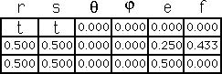
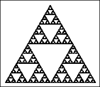

| For the equilateral gasket rules, let t range from .5 to .1 in steps of .1. |
| Note as soon as the lower left corner of the gasket breaks off, the lower left corner of each piece breaks off. |
| Changing any part of a fractal changes the whole shape. |
|  |  |